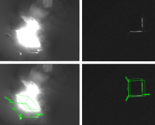
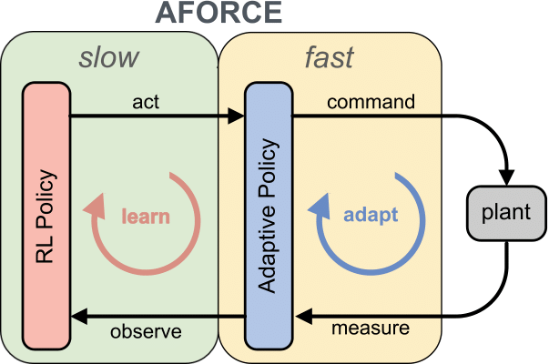
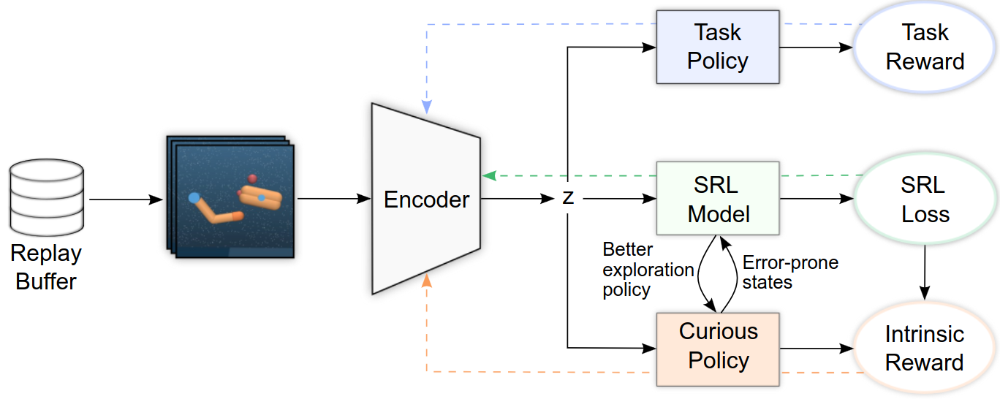
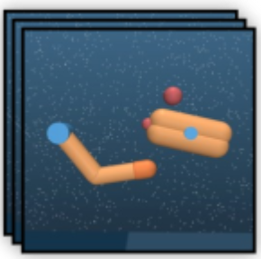
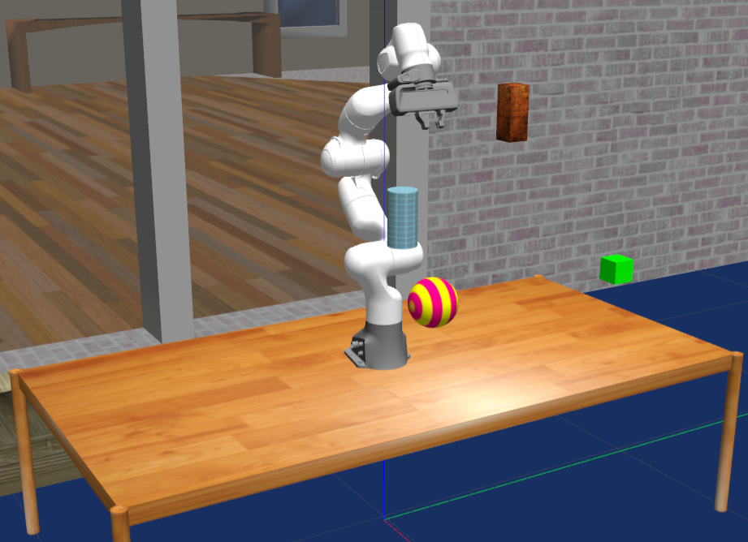

|
Hello! I am a Research Scientist at the Institute of Robotics and Mechatronics of the German Aerospace Center (DLR) and a PhD candidate at Karlsruhe Institute of Technology advised by Prof. Rudolph Triebel. My research is focused on camera-based 6D pose estimation for robotic manipulation. Prior, I worked with Prof. Sami Haddadin at the Munich Institute of Robotics and Machine Intelligence of TUM with a focus on robotic manipulation and reinforcement learning. Email / Google Scholar / Twitter / Github |

|
|  |
Maximilian Ulmer, Maximilian Durner, Martin Sundermeyer, Manuel Stoiber, and Rudolph Triebel IROS, 2023 paper / code / video Perform highly accurate 6D object pose estimation from only grayscale and an approximate 3D model of the target in orbit. Best overall result in the SPEED+ satellite pose estimation challenge. |
|  |
Maximilian Ulmer, Elie Aljalbout, Sascha Schwarz, and Sami Haddadin arXiv preprint 2022 paper / video Introduces a novel adaptive force-impedance action space which allows RL agents to learn complex manipulations skills faster while improving energy consumption and safety. |
|  |
Elie Aljalbout, Maximilian Ulmer and Rudolph Triebel ICRA, 2022 paper Improve reinformcent learning agents exploration capability with state representations learning. |
|  |
Maximilian Ulmer*, Elie Aljalbout*, and Rudolph Triebel ICRA 2021, Workshop on Curios Robots paper Incentivise agents to explore state space they haven't seen through visual feedback. |
|  |
Elie Aljalbout, Ji Chen, Konstantin Ritt, Maximilian Ulmer, Sami Haddadin CoRL, 2020 project page / video / arXiv Learn obstacle avoidance policies while maintaining closed-loop responsiveness required for critical applications like human-robot interaction. |
TeachingTechnical University of MunichEI71056: Advanced Robot Control and Learning [Winter 2019] [Winter 2020] Student Robothon: "Coastal Cleanup: Robotics-aided Climate Protection" [Winter
2019]
|
Credits to Jon Barron